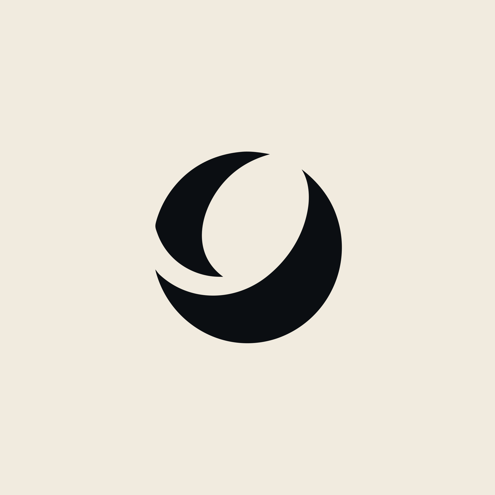
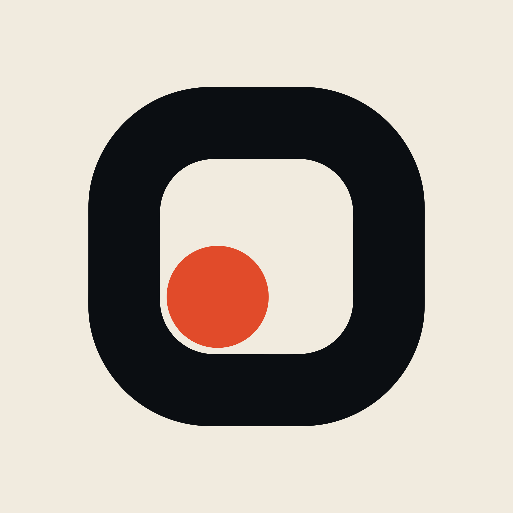
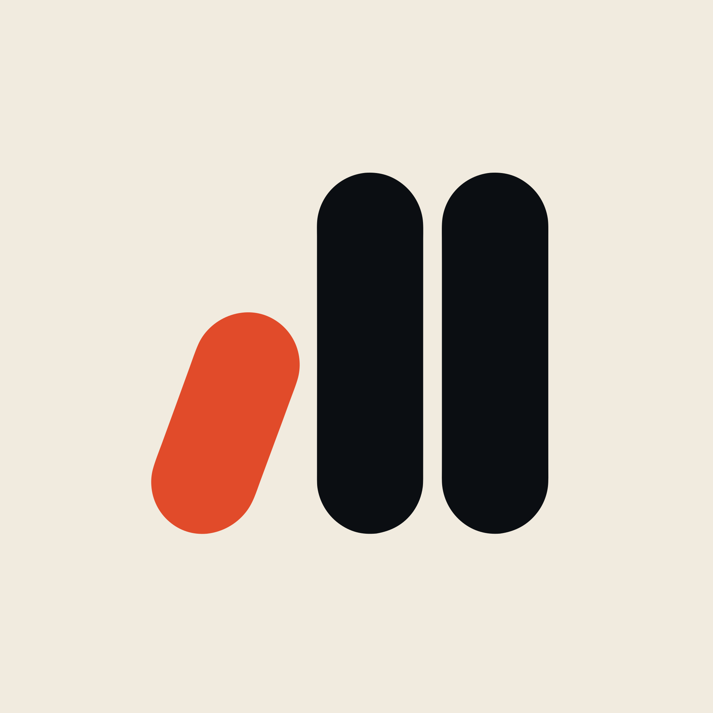

Soft geometry, two or three elements, one hot accent. Shown large, at 40/24/16px, and knocked out.

A ball reduced to one line. Two elements total, instantly read, nobody in this space owns it.

A frame with one dot off-centre. Reads as save, record, and a moment held. App-icon native.

Three capsules climbing, the first tilted. Rank and motion in one gesture.